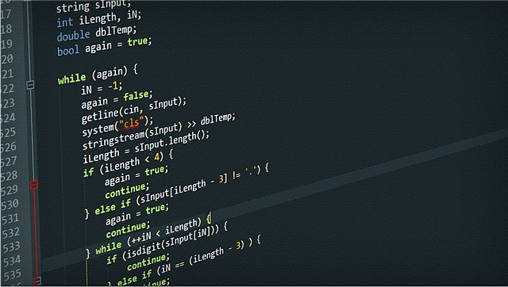

La realidad virtual
By Naidelyn
¿ Como diseñar experiencias atractivas
aplicando realidad virtual?

◽ Elegir una plataforma de realidad
Existen diferentes plataformas de realidad virtual como Oculus, SteamVR, Windows Mixed Reality y Google Cardboard.
◽ Selección de un lenguaje de programación
Se debe seleccionar un lenguaje de programación que sea compatible con la plataforma elegida. Las opciones más populares incluyen c# que se usa a menudo con Unity.
◽ Diseño de una escena de realidad virtual
Es un entorno digital donde se colocan objetos, luces y sonidos. Para diseñarlas, se utilizan editores específicos dependiendo de la plataforma y el lenguaje de programación.
◽ Adición de audio de realidad virtual
◽ Pruebas y depuración
Se comprueba o se corrige cualquier problema que pueda afectar a la funcionalidad o la calidad de la aplicación de realidad virtual, para ello se utliza un simulador de realidad virtual que permite ejecutar y evaluar la aplicación.
Aplicabilidad de C# en la realidad virtual
C# es un lenguaje muy popular y más utlizado para crear aplicaciones de realidad virtual, orientada al campo de videojuegos y tiene compatiblidad con herramientas de desarrollo de juego como Unity.
C# tiene facilidad de aprendizaje lo que ayuda a los desarrolladores a enfocarse en la creación de la aplicación de realidad virtual en lugar de lidiar con código fuente demasiado complejo
C# está orientada a objetos lo que facilita la organización del código, la reutilización de código fuente y la organización de aplicaciones de realidad virtual complejas.
Script en C#
Los scripts son bloques de código escritos en un lenguaje que Unity puede entender (C#) y se utilizan para programar la lógica del juego y todos los aspectos relacionados con la implementación técnica.
Ejemplo de un script en C# para mover un objeto
using UnityEngine;
public class Miprimerscript : MonoBehaviour
{
public float movimiento = 3.0f;
void Update()
{
float moveX = Input.GetAxis("Horizontal") * movimiento * Time.deltaTime;
float moveZ = Input.GetAxis("Vertical") * movimiento * Time.deltaTime;
transform.Translate(moveX, 0, moveZ);
}
}